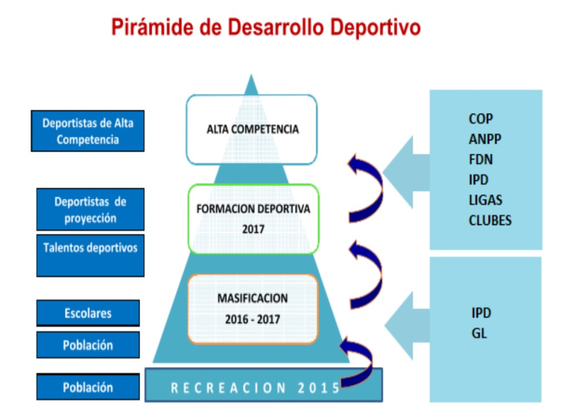

INTRODUCCIÓN
En el Perú, se invierte un aproximado de 15 millones de soles en deporte, el cual resulta insuficiente para cubrir los gastos de preparación que las 61 federaciones deportivas necesitan para representar al país en competencias internacionales como los Panamericanos. Por otro lado, es la realidad en países vecinos como Ecuador, Chile, Colombia y Brasil cuyas partidas presupuestarias no bajan de los 50 millones de dólares. Sin embargo, entre los años 2009 y 2018 la inversión en infraestructura deportiva ha aumentado 5% anual. Por ello es necesario el aprovechamiento y adecuado uso de la nueva infraestructura desarrollada como equipos sofisticados para evaluar y mejorar el rendimiento de los deportistas de alto rendimiento.
Una ciencia importante en la mejora física de los deportistas es la antropometría, la cual estudia las medidas del cuerpo humano sin ningún tipo de porcentaje de error mínimo, ya que las medidas han de ser exactas a la par que se tomen. Sin embargo, los recursos con los que cuenta el IPD son muy escasos, ya que su sistema de recolección de medidas es convencional y no muy eficiente, además de que es necesario contar con un especialista calificado para la toma de estas medidas, a diferencia de los métodos utilizados por países vecinos como Brasil y Colombia, donde la antropometría se realiza con equipos muy sofisticados.
CONTEXTO SOCIAL
En la actualidad cuando se habla de antropometría se refiere a una herramienta para potenciar el rendimiento de una disciplina deportiva. En muchos países, esta herramienta es fundamental para poder valorar y explotar la capacidad de respuesta de un atleta, para disminuir el riesgo de sufrir lesiones y para saber cómo está constituido su cuerpo, conociendo cuál es la proporción del peso que corresponde a la masa muscular y cuál a la grasa corporal, además también se usa para detectar jóvenes talentos para un deporte específico. Sin embargo, en el Perú, ésta herramienta aún no se utiliza como se debería, ya que en lo que respecta a la tecnología estamos muy por debajo de nuestros países vecinos, tales como Colombia y Brasil. En estos países, la antropometría se realiza con equipos de termografía infrarroja, SYMCAD, Body scanner, mediciones con fotografías, Kinect y aplicaciones desde el móvil, mientras que, en el Perú, aún se toman medidas con métodos convencionales, esto conlleva a mucho tiempo y errores.
Además, hay otros factores morfológicos y sociológicos implicados en el rendimiento deportivo. Por un lado, la carencia de un físico y de una complexión física adecuada a las exigencias del deporte hacen prácticamente imposible competir con los demás atletas de alto nivel. Por otro lado, las condiciones sociales y culturales condicionan a la práctica de algunas disciplinas deportivas. Ya que, en algunas regiones del Perú, se dan incentivos a los atletas que llegan a lograr algo, esto afecta motivacionalmente a estos atletas y puede ser positivo en muchos casos, mientras que en otros casos los resultados pueden ser adversos, puesto que al tratarse de una recompensa el atleta se puede poner nervioso y más si este atleta no cuenta el sustento económico notable.
CONTEXTO ECONÓMICO
Para conseguir la sostenibilidad del deporte en el Perú debemos lograr que este sea autosostenible, esto es por que su desarrollo es permanente, es decir, está en constante desarrollo. Al lograr su autosostenibilidad, hacemos que este deje de depender de la inversión del estado en el deporte, y hacemos que su única dependencia sea al progreso de su misma industria, la industria deportiva.
Para ello, esto se puede estudiar de dos ángulos distintos que se complementan:

Figura 1. Ángulos complementarios en la industria deportiva.
Esto se ha conseguido con el paso del tiempo, por ejemplo, consiguiendo incrementar un 2.88% el promedio de nuestra participación en juegos olímpicos desde 2004 al 2016. Aunque el hecho más evidente del incremento de la industria deportiva en el Perú ha sido si no hasta el presente año (2019) en el cual el Perú ha sido anfitrión de 3 certámenes deportivos a nivel internacional, estos fueron: El Rally Dakar, los Juegos Panamericanos y los Juegos Parapanamericanos.

Figura 2 .El Rally Dakar, los Juegos Panamericanos y los Juegos Parapanamericanos.
Centrandonos en estos dos últimos, como ya se explico anteriormente los beneficios que le traen al país son numerosos, pero el principal será la cantidad de turistas que visitarán el Perú, los cuales fueron un aproximado de 75000, estos generarán aún más ingresos (Que se estiman fuesen 125 millones de dólares) desde la compra de entradas para los encuentros deportivos, como el turismo que realizarán en distintas partes del país.
Todos estos logros solo le dan aún más apoyo a la ya aprobada iniciativa para la creación del Ministerio de deporte, algo con lo que países vecinos tales como Chile y Brasil ya cuentan y Colombia que está próxima a crear.
PROBLEMÁTICA
El bajo nivel competitivo del deporte peruano se refleja en la cantidad de medallas obtenidas y el número de deportistas peruanos participantes en el último Juego Olímpico Río 2016. En este encuentro participaron un total de 29 deportistas peruanos obtuvieron 0 medallas, a comparación de nuestro país vecino Colombia que participaron 147 deportistas en 23 deportes diferentes y obtuvieron un total de 8 medallas. Los motivos que hemos identificado a este bajo nivel competitivo son la falta de orientación deportiva por parte de los entrenadores en colegios de provincias con la finalidad de captar talento deportivo; también, el poco profesionalismo por parte de los deportistas en seguir las indicaciones de los entrenadores afectando el progreso de su rendimiento y el escaso soporte económico por parte del deportista debido a que no todos presentan una cantidad considerable de empresas auspiciadoras. Por ello, se ha elaborado el sistema Medantro, el cual se centra en solucionar la falta de orientación deportiva por parte de profesores de colegios de provincia.

Figura 1. Pirámide de desarrollo deportivo.
PROBLEMA
“Bajo nivel competitivo en deportistas de alto rendimiento”
IDENTIFICACIÓN DE LOS EFECTOS
-La escasa cultura deportiva en la población peruana y poca valoración y reconocimiento del deportista de alta competencia.
El deporte no está posicionado en la mente de la mayor parte de la población peruana como un generador de bienestar personal y social. La población ve al deporte como un espacio de ocio y entretenimiento, pero no como un elemento que forma parte del desarrollo físico y mental de la persona. A nivel de políticas públicas tampoco se ha priorizado el deporte como un elemento clave en la formación integral del niño, ni como un medio para la reducción del pandillaje y como un medio generador de oportunidades de desarrollo. Además, muchos deportistas que han puesto en alto el nombre del Perú con su esfuerzo y dedicación, son poco reconocidos y valorados por la mayor parte de la población.
-Escasa participación de los medios de comunicación en la difusión de las distintas disciplinas deportivas
La difusión de otras disciplinas deportivas es mínimo,con excepción del fútbol y el vóley.Más que un problema de los mismos medios de comunicación, el problema está en el poco atractivo que generan las otras disciplinas deportivas, que a pesar de su enorme potencial, no cuentan con estrategias de marketing y comunicación para hacer de su deporte y los campeonatos más atractivo para la población.
-La falta de patrocinio por parte de marcas exclusivas para los deportistas
Además de talento y perseverancia, ser un atleta de élite requiere financiamiento. En ese sentido, el patrocinio es una de las mejores opciones para solventar entrenamiento, alimentación, viajes, entre otros gastos que tiene un deportista.Sin embargo el tener una baja cantidad de deportistas peruanos que participen en encuentros deportivos internacionales ocasiona que las empresas no inviertan en el área deportivo.
MEDICIÓN DE LOS EFECTOS
La escasa cultura deportiva en la población peruana se refleja en la cantidad de tiempo que le dedican a realizar actividad física. Lamentablemente no se cuenta con un estudio sobre la implementación del tiempo en la población peruana. Sin embargo, se ha tomado como referencia el estudio elaborado por el doctor Tarqui, Sánchez, Álvarez y Valdivia publicado en el 2013 para determinar el nivel de actividad física de los miembros del hogar entre 15 a 69 años. El resultado de este estudio dio a conocer que un 81,6 % de las mujeres encuestadas realizan con baja frecuencia actividad física, además en la zona urbana se realiza poca actividad física. Por otra parte, la inactividad física y el sedentarismo están asociados a un amplio rango de enfermedades, además el avance de la tecnología ha incrementado los niveles de sedentarismo, sobre todo en áreas urbanas.
En el caso de la falta de auspiciadores para deportistas se puede evidenciar en los últimos Juegos Olímpicos Río 2016, en el cual solo 14 deportistas fueron auspiciados de un total de 29 deportistas.
IMPACTOS
-Impacto Social
El alto rendimiento de los deportistas calificados se verá reflejado en los logros que estos obtengan en eventos deportivos, esto conlleva a que estos deportes crezcan, se popularicen y sean tomados en cuenta por la población. Un ejemplo son los resultados obtenidos en el surf y el maratón en los últimos Juegos Panamericanos y Parapanamericanos Lima 2019 donde se obtuvieron 54 medallas entre las distintas delegaciones peruanas. Obteniendo 6 medallas en surf (3 de oro) y 2 medallas de oro en maratón. Y precisamente según una encuesta realizada por El Comercio – Ipsos finalizado los juegos Panamericanos Lima 2019, los deportes en los que más destaca el Perú a nivel internacional después del fútbol son el maratón y surf.
Por otro lado, el deportista también es un transmisor de valores para los niños y adolescentes. Un estudio realizado por la Universidad de Oviedo, nos dice que utilizar deportistas como modelos de conducta puede aumentar el rendimiento, la habilidad y el trabajo ético en la formación integral de la persona.
-Impacto Económico
Los juegos Panamericanos y Parapanamericanos Lima 2019 también generaron un impacto económico. Según el presidente del COPAL, Carlos Neuhaus, el impacto que dejará Lima 2019 alcanzará los 5,200 millones de soles que representa entre el 0.5% y 0.7% del PBI. Si hablamos de los deportistas, el bajo rendimiento de estos influye negativamente a largo plazo en los logros (medallas y récords) que los deportistas puedan obtener en eventos deportivos internacionales. Esto conlleva a que empresas privadas no inviertan en los atletas. Como se sabe el deporte es una industria atractiva para la inversión de empresas privadas, en especial cuando se logran éxitos en eventos deportivos internacionales. Además, la publicidad a deportistas calificados de alta competencia permite establecer ideales y modelos en la sociedad logrando impulsar marcas y productos.
Si bien no existen valores exactos de cuánto pueden recibir los atletas por auspicios para David Ruiz, socio fundador de la agencia de márketing deportivo Inyogo, puede fluctuar desde un paquete digital de US$5 mil a un auspicio Oro que puede ser de US$40 mil, en contratos por un año.
COMPARACIÓN CON ESTÁNDARES
Comparación de la situación deportiva actual en el Perú con el estándar internacional (USA)

Fuente: IPD (Programa presupuestal)
PLAN DE TRABAJO